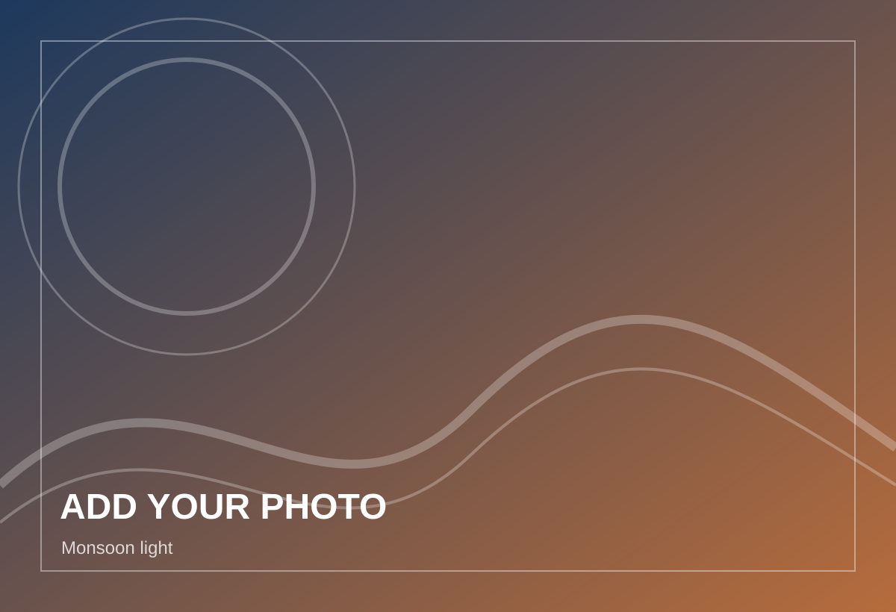
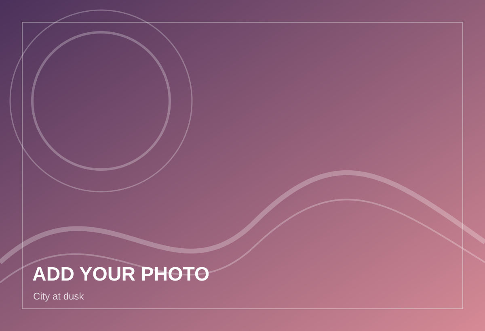
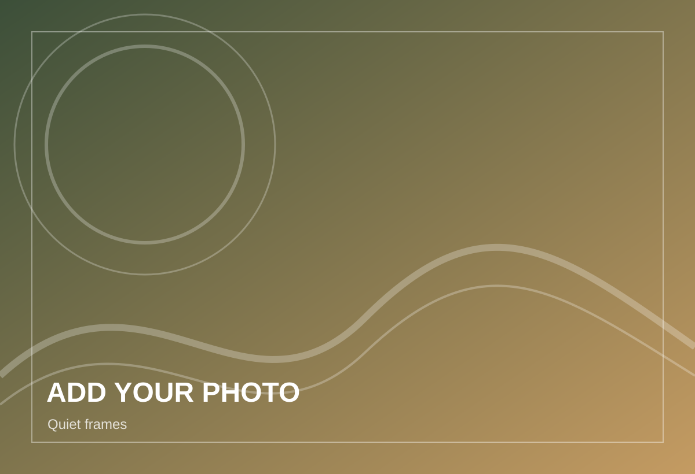

Optical GeometryReplace image
Beyond the Lab
Photography, drawing and the outdoors.
Creative practice is part of how I observe. Photography trains attention to light, geometry and timing; sketching develops visual clarity; trekking and swimming keep research life grounded.
“The same habit of looking closely connects photography, scientific diagrams and experimental work.”
This page is prepared as a visual gallery. Replace the six placeholder SVG files inside assets/gallery with your own photographs while keeping the same filenames, or edit the image paths and captions in hobbies.html.
The layout supports landscape, portrait and square images and opens each photograph in a simple lightbox.
Photography
Selected frames
Temporary visual placeholders ready for your own portfolio images.

Monsoon LightReplace image
Field NotesReplace image

City at DuskReplace image
Trail StudyReplace image

Quiet FramesReplace image
Other interests
Creative and physical practice
Drawing
Sketching & scientific illustration
Observational sketching, national-level drawing experience and vector diagrams for scientific communication.
Outdoors
Trekking
Long walks and mountain environments provide distance from the laboratory and sharpen patience and observation.
Sport
Swimming
A regular physical activity that supports focus, consistency and balance during demanding research periods.
Add your own gallery
The README contains exact instructions for replacing images and editing captions without changing the layout.